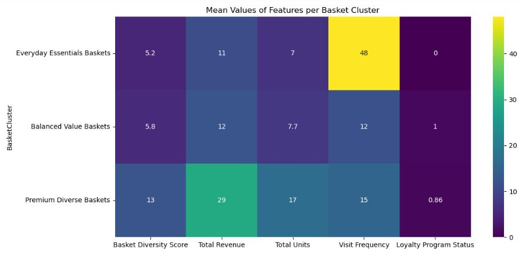
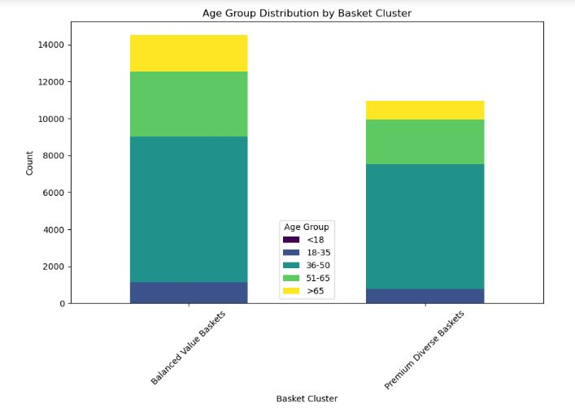
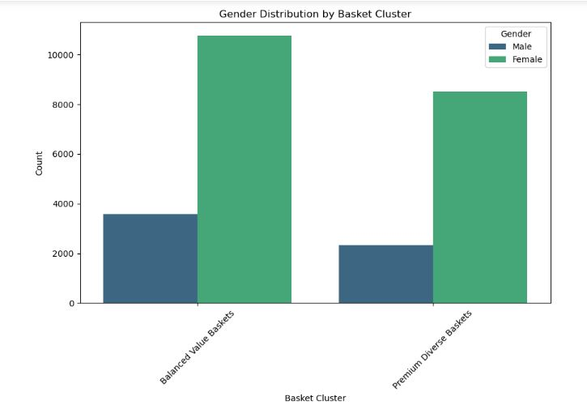
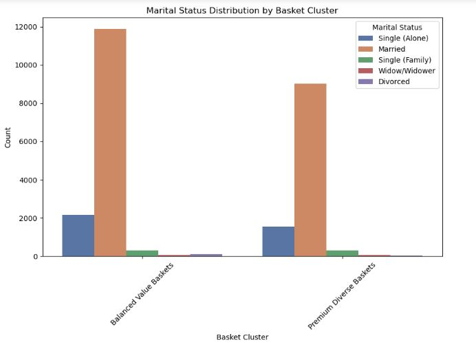
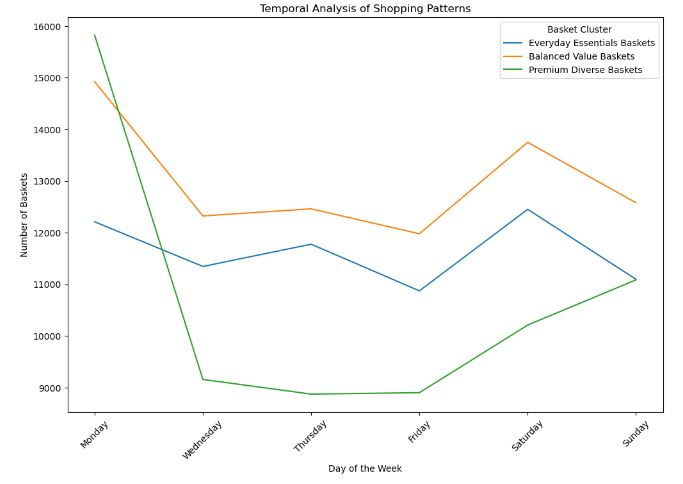
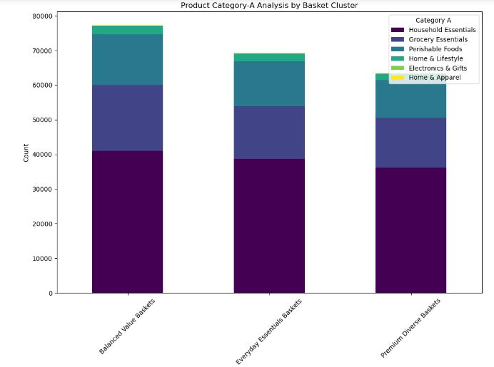
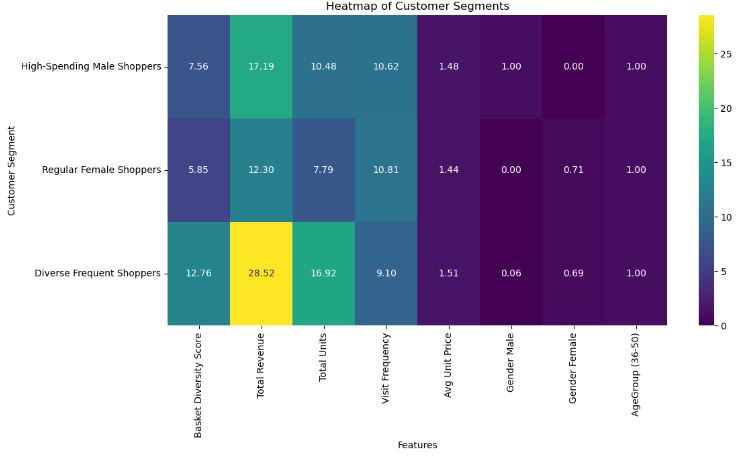
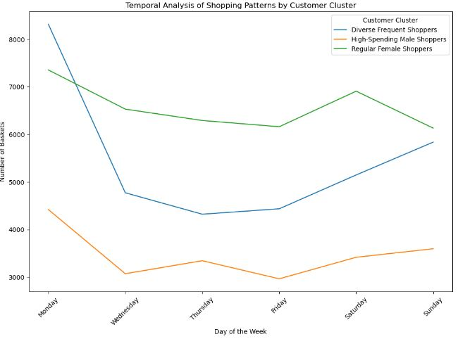
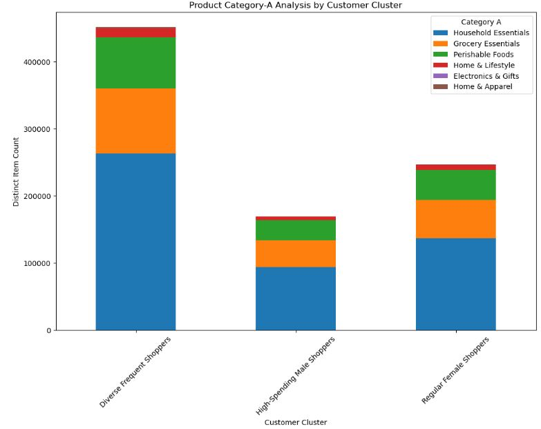

Retail Data Analytics Project
View Full Python Notebook on GitHub:
Introduction
This Retail Data Analytics project shows us the dynamics of consumer behavior, product preferences and purchasing patterns through an extensive analysis of retail data. This project offers an in-depth exploration of basket and customer segments for a supermarket. The analysis was done for the 4 given datasets - POS_DATA, LOYALTY, BARCODES, and PRODUCT_TAXONOMY. By creating various meaningful features from the given data, which serves as the backbone for the segmentation analysis, gained insights into diverse customer profiles and shopping behaviors. The use of clustering techniques has led to the discovery of distinct segments, providing critical insights for targeted marketing, product placement and strategic business decisions.
Data Preparation
- Utilized Python libraries pandas and numpy for importing and preparing data from four key tables: POS_DATA, LOYALTY, BARCODES, and PRODUCT_TAXONOMY.
- Tasks for each table included:
- Checking for missing values.
- Verifying and converting data types.
- Identifying and handling duplicate rows.
- Addressing outliers and performing data integrity checks.
- Specific cleaning actions taken:
- POS_DATA Table:
- Converted integer dates to datetime data type using a reference date (01-01-1900).
- Checked data integrity between 'Card_ID' in POS_DATA and 'CardholderID' in LOYALTY.
- Ensured consistency between 'Barcodes' in POS_DATA and 'Barcode' in BARCODE.
- LOYALTY Table:
- Normalized various gender entries to a single 'Unknown' category.
- Filled missing data in Age, MaritalStatus, and Children with median values for better demographic understanding.
- Removed inconsistent data for 'HouseholdSize' and 'Children' where household size was 1 but had more than 0 children.
- BARCODES and PRODUCT_TAXONOMY Tables:
- Addressed mismatch in category values between the tables.
- Created a new 'Miscellaneous' category in PRODUCT_TAXONOMY and updated the BARCODES table accordingly.
- Standardized the size of barcodes in both POS_DATA and BARCODES tables to 12 digits by padding with zeros.
- POS_DATA Table:
Developed Features for Basket and Customer Segmentation
- Basket_Diversity_Score: Indicates the variety of product types in each basket, differentiating between customers who buy a wide range of products and those who focus on specific categories.
- Sum_Value_Net: Represents the net monetary value of each basket, crucial for identifying high-value versus low-value shoppers.
- Sum_Units_Net: Reflects the volume of products purchased, aiding in distinguishing between bulk buyers and those who purchase fewer items.
- Visit_Frequency: This metric identifies regular shoppers versus occasional visitors.
- Is_Loyalty_Member: Distinguishes between customers who are part of a loyalty program and those who aren't, indicative of customer engagement and loyalty.
- Is_Weekend: Helps to identify shopping patterns based on the day of the week, useful for understanding customer lifestyle and preferences.
- Avg_Unit_Price: Offers insights into the price range of products each customer tends to purchase, distinguishing between those who buy premium items and those who opt for more economical choices.
Basket Segmentation
Using the newly derived features, performed the Pearson correlation test to find the Correlation among the variables and to remove the highly correlated variables. Checked for outliers for the features and removed them as K-Means algorithm works better when the outliers are removed for features with continuous data. Features chosen to perform K-Means - 'Basket_Diversity_Score', 'Sum_Value_Net’, 'Sum_Units_Net’, 'Visit_Frequency', 'Is_Loyalty_Member’, 'Is_Weekend’ and 'Avg_Unit_Price’. Scaled and normalized the features to feed it as an input to the elbow curve graph to determine the K value, here the value was k=3. Once the basket segments were formed, checked the cluster characteristics and derived the basket segments. Demographic (Age Group, Gender and Marital Status), Temporal, Product Category A and Category B analysis is done across the basket clusters to get insights and can further make recommendations on these basis.
RESULTS:
Mean Values of Features per Basket Cluster
Age Group Distribution by Basket Cluster
In both the Basket-Segments, the dominant age group is 36-50 and the other ages are all above 50.
Gender Distribution by Basket Cluster
In both the basket-segments we can see that it's female dominant, which could suggest that this supermarket attracts many female customers.
Marital Status Distribution by Basket Cluster
In both the basket-segments we can see that majority are married.
Temporal Analysis of Shopping Patterns
- Premium Diverse Baskets: Peaks on Mondays (15,824 baskets) and Sundays (11,085), with a mid-week dip, particularly on Thursdays (8,873) and Fridays (8,901). This indicates a preference for shopping at the week's start and end.
- Balanced Value Baskets: Starts high on Mondays (14,678) and remains consistently high, especially on Thursdays (12,250) and Fridays (13,403). Shows a stable shopping behavior with a slight increase towards the weekend.
- Everyday Essentials Baskets: Exhibits the least fluctuation. Starts moderately on Mondays (11,679) and maintains a steady count throughout the week, with slight peaks on Fridays (11,953) and a minor dip on Sundays (10,663). Suggests regular, consistent shopping habits.
Product Category-A Analysis by Basket Cluster
-
Premium Diverse Baskets:
- Dominated by Category A-10 (Household Essentials) with 36,135 items.
- Significant presence of Category A-20 (Grocery Essentials) with 14,365 items and A-30 (Perishable Foods) with 10,872 items.
- Limited items in Categories A-40 (Home & Lifestyle) with 1,934 items, A-50 (Electronics & Gifts) with 14 items and A-60 (Home & Apparel) with 100 items.
- Highest count in Category A-10 (Household Essentials) with 41,049 items.
- More balanced distribution with Category A-20 (Grocery Essentials) at 18,991 items and A-30 (Perishable Foods) at 14,566 items also prominent.
- Higher counts than Premium Diverse Baskets in Categories A-40 (Home & Lifestyle) with 2,524 items, A-50 (Electronics & Gifts) with 28 items and A-60 (Home & Apparel) with 145 items, though these categories still form a minor part.
- Similar trend to Balanced Value Baskets, with the highest count in Category A-10 (Household Essentials) at 38,688 items.
- Slightly fewer items in Category A-20 (Grocery Essentials) with 15,252 items and A-30 (Perishable Foods) with 12,946 items compared to Balanced Value Baskets.
- Comparable counts in Categories A-40 (Home & Lifestyle) with 2,158 items, A-50 (Electronics & Gifts) with 30 items and A-60 (Home & Apparel) with 184 items to Balanced Value Baskets.
Customer Segmentation
The customer segmentation is done for Cardholders (as demographic data is only present for them). Created one-hot encoding for Gender and for Age Group. Using the relevant features, performed the Pearson correlation test to find the Correlation among the variables and to remove the highly correlated variables. Checked for outliers for the features and removed them. Features chosen to perform K-Means -> ‘Basket_Diversity_Score’, 'Sum_Value_Net’, 'Sum_Units_Net’, 'Visit_Frequency’, 'Is_Weekend’, 'Avg_Unit_Price’, 'Gender_Male’, 'Gender_Female’, 'AgeGroup_18-35’, 'AgeGroup_36-50’, 'AgeGroup_51-65’ and 'AgeGroup_>65.’ The scaled and normalized features were fed as an input to the elbow curve graph to determine the K value, here the value was k=3. Once the customer segments were formed, checked the cluster characteristics and derived the customer segments. Demographic (Age Group, Gender and Marital Status), Temporal and Product Category A analysis is done across the customer clusters to get insights and can further make recommendations on these basis.
RESULTS:
Mean Values of Features per Customer Cluster
Temporal Analysis of Shopping Patterns
Product Category-A Analysis by Customer Cluster
RECOMMENDATIONS
- Optimize Inventory for Key Segments: Given the high demand for 'Household Essentials' across all customer segments, the supermarket should have a robust inventory of these items to minimize stockouts, especially during peak shopping days.
- Targeted Marketing Campaigns:
- Run special promotions or loyalty rewards for the Premium Diverse Baskets cluster, peaking on Mondays and Sundays, to maintain and increase traffic.
- Introduce loyalty programs or weekly deals for the Balanced Value Baskets and Everyday Essentials Baskets, encouraging regular visits due to their consistent shopping behaviors.
- Customize Product Placement: Improve customer flow and increase cross-selling opportunities by placing high-demand items from 'Household Essentials', 'Grocery Essentials', and 'Perishable Foods' in strategic locations.
- Tailor Promotions to Demographic Trends: Focus promotions on products and services appealing to the dominant demographic of middle-aged females and offer family-oriented promotions based on marital status distribution.
- Enhance Loyalty Programs: With high visit frequency in the Everyday Essentials Baskets segment and no loyalty program status, introduce or revamp loyalty programs to boost sign-ups and repeat purchases.
- Weekend Traffic Management: Optimize staffing and checkout efficiency on weekends to enhance customer experience, addressing the increased activity by Regular Female Shoppers.
- Diversify Product Offerings: Explore expanding the range in underrepresented categories like 'Electronics & Gifts' and 'Home & Apparel', after careful market testing to confirm demand.
- Customer Experience Improvements: Attract and retain the largely married female customer base by considering services like play areas for children and hosting community events.
- Age-Specific Strategies: Cater to different age groups by creating special sections or offering quieter shopping hours for older customers and after-school deals for younger demographics.
CONCLUSION
This data analytics project revealed key trends in consumer behavior that are instrumental for inventory optimization, targeted marketing and customer experience enhancements in the supermarket sector. Focused strategies on high-demand product categories, customer demographics and shopping patterns can lead to increased customer satisfaction and business growth. Implementing the derived insights will enable the supermarket to refine its operations and cater more effectively to its customer base.